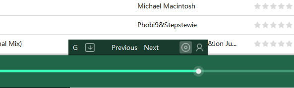
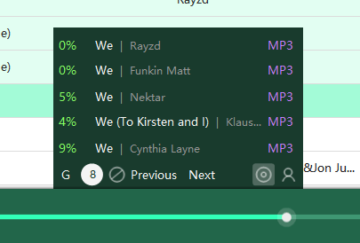
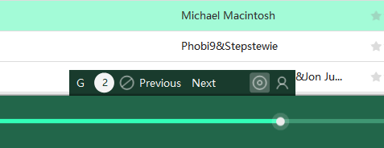

Playlist view toolbar
Playlist toolbar is only enabled for internet type playlist (e.g. netearch) by default. If you wan to enable it for all playlists, goto "foobox settings --> Playlist view" page to modify the setting.
The toolbar is hided at the center bottom of playlist view panel. You can move mouse to the triangle icon area to activate the toolbar.
[4 common buttons]
Function of 4 common buttons (left to right):
[Net playlist buttons]
* For playlist generated by Web Search, page up and down buttons be available.
[Download panel in the toolbar]
* Download panel is integrated in toolbar, when download, the panel will displays with the toolbar (unable to hide).
* When download, two buttons are available: one for display count + show/hide download panel, one for cancel download.
* Click the download count to show/hide download panel.
---The End---